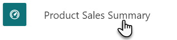
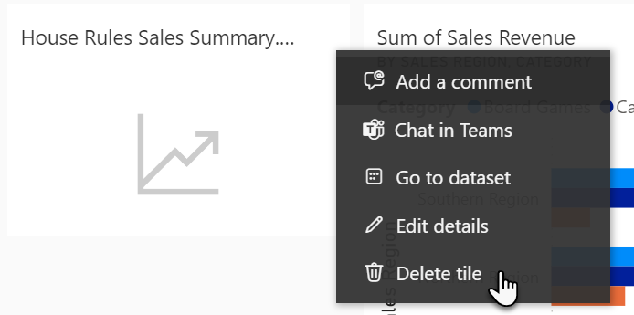
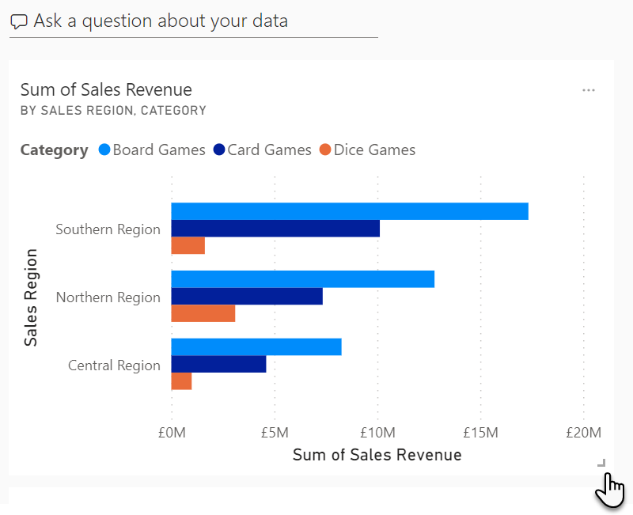
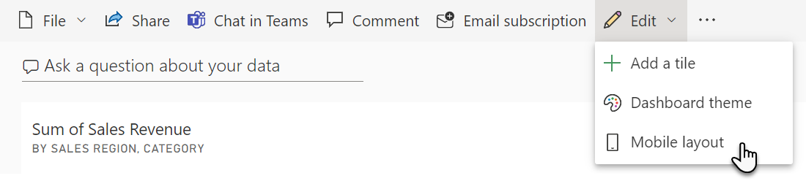
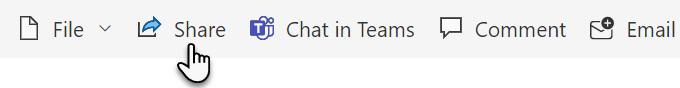
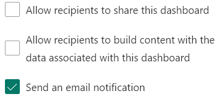
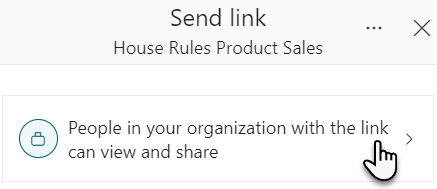
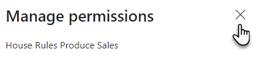

- The Pin to dashboard dialog box appears, ensure that Existing dashboard is selected, and Product Sales Summary is present
before clicking Pin

- Repeat steps 7 and 8 to pin 2 more visualisations, again you can pick any one you like
- After you have pinned 3 visuals to the dashboard, click on your workspace in the left and then
click on your Product Sales Summary dashboard

- When on the dashboard, you may notice a 4th tile, this is a button
to navigate to the report, you can remove it by positioning your mouse course over the tile, selecting the ellipsis (…) and choosing Delete tile

- Click and hold your left mouse button on a tile and drag it to
reposition, do not left click on a tile, otherwise you will be navigated to the report
containing the visualisation, if this happens navigate back to the dashboard and repeat this step again but
hold down the left button
- To resize a tile, position your mouse cursor over the tile to reveal the resize handle
 then click and
hold down your left mouse button on the icon and drag to resize
then click and
hold down your left mouse button on the icon and drag to resize

- Repeat this until you are happy with your layout
- To set up your phone view, in the menu above the dashboard, click on the Edit and choose Mobile view

- Using the same drag and drop/resizing techniques as earlier, organise the Mobile layout to make the best use of a device’s portrait orientation
- Once ready, in the top menu, click on Mobile layout then Web layout to switch back
- Your dashboards are ready, I know it feels like we have recreated our report, but remember we can
add visuals from other reports to the dashboard to tell a new story about our data
Exercise 4 – Share your report and dashboard
You need to share your work with the sales executive; however, another colleague has expressed an
interest in your dashboard and has asked to view it on his phone. To do this we need to give our colleagues access.
- While on your dashboard, click on the
 Share button in the top menu
Share button in the top menu

- In the grant access to field, enter Chris Casingena
- Optionally add a message
- Next, disable the following options to stop re-sharing and allow use of our dataset for other
reports

- Once ready, click Grant access
- Next, navigate to your report, House Rules Product Sales using the left
menu, to open the My workspace and select the report
- Click on the Share button in the ribbon
- Click on the banner labeled People in your organization…

- Choose Specific people and click Apply
- Share the report with Steve Smith and Caroline
Lee
- Click Send then click on the X to close the
dialog box
- You are advised that Caroline is leaving the company, and to remove her access to the report, to
do this, click on Share (in the top menu) once more
- Click on the ellipsis (…) button at the top of the Share pane and choose Manage permissions

- In the pane on the right of the page, click on the arrow
 under
the Link giving access to Caroline and Steve
under
the Link giving access to Caroline and Steve

- Click on the X next to Caroline Lee and confirm
by clicking Remove
- To close the Manage permissions pane, click on the X at the top right of the pane
